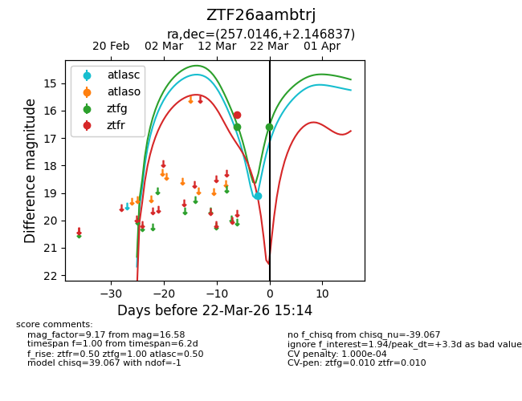
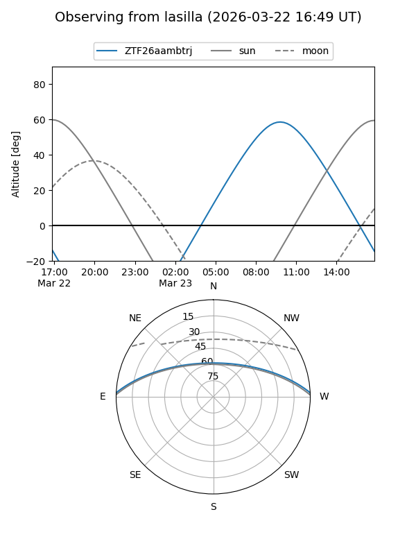
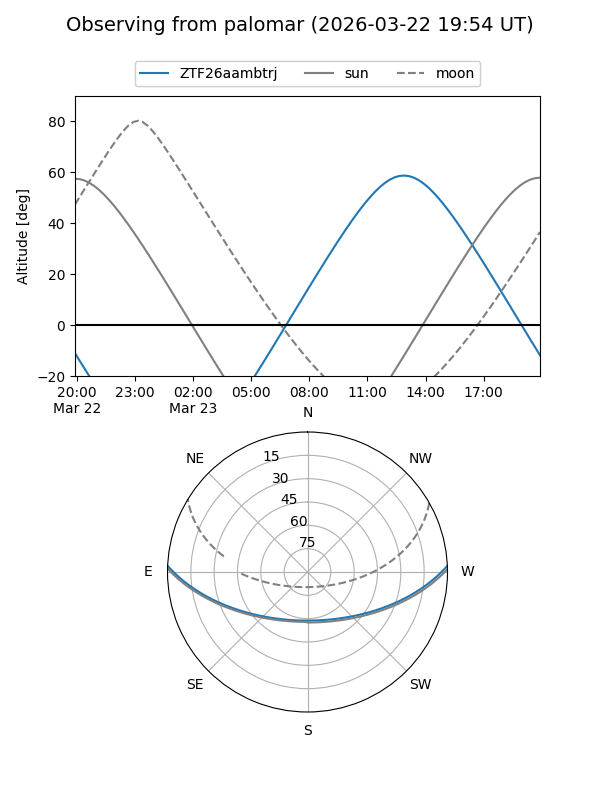
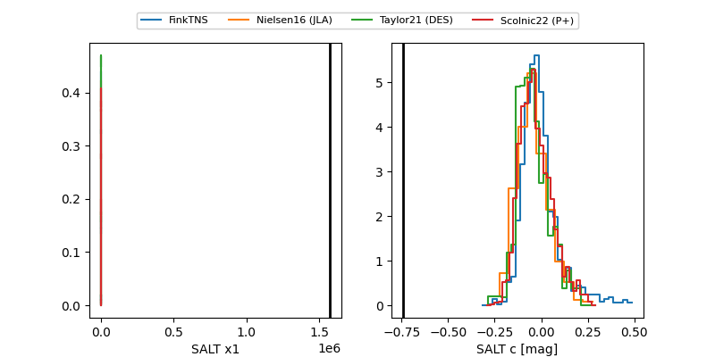

ZTF26aambtrj
Target ZTF26aambtrj at 2026-03-22 15:16
Aliases and brokers:
FINK: link
Lasair: link
ALeRCE: link
alt names
ZTF26aambtrj (ztf,fink_ztf)
Coordinates:
equatorial (ra, dec) = 257.0146,+2.14684
equatorial (HMS+DMS) = 17:08:03.51,+02:08:48.61
galactic (l, b) = (22.5172,+23.87776)
Flags:
likely cv
Photometry:
last atlasc=19.11, ztfg=16.58, ztfr=16.16
1 atlasc, 2 ztfg, 1 ztfr detections
Lightcurve

Visibility


Additional plots
